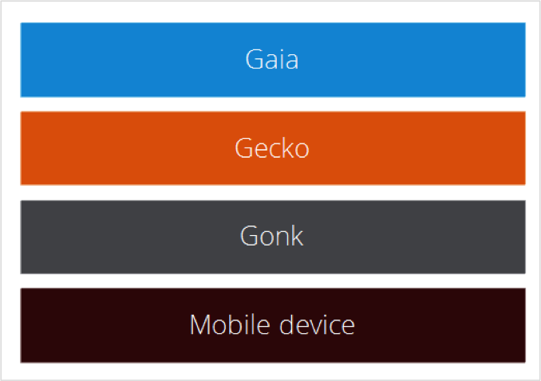

Firefox OS
The definitive slides
What is Firefox OS?
Firefox OS is a mobile operating system

Firefox OS is a flagship

Firefox OS is an open source mobile operating system.
Fully implemented with web technologies.
Internet is the platform.
open source == linux ♥ gecko
gonk is an Android fork.
web technologies == standard technologies
code once, run everywhere!
Internet is the platform == ...
smart Web applications +
tons of applications already out there!
What is new in
1.2 & 1.3?
Conference calls
Notifications for new e-mails
Audio and video attachments for e-mail
New lock-screen
Improved push notifications
"Do not track" setting
Music player controls in the utility tray and lock-screen
Near Field Communications
DSDS support
Visual refresh
Improved Performance
Architecture
Firefox OS == Gonk + Gecko + Gaia
Details about Firefox OS Architecture at
the
Mozilla Developer Network
Gonk
Is an Android fork without a Dalvik machine. A fly-weight Linux distribution.
Gecko

Is the Firefox' engine on steroids (lots of new APIs).
Gaia

Is a set of Web Applications covering the core functionality: dialer, messaging, contacts, camera, gallery, homescreen, keyboard, system...
Yes! The system is a HTML5 applications too!
Applications
Firefox OS applications == web applications + ...
Web applications? But I already know...

Congratulations! You already know
how to develop Firefox OS apps!
+ manifest
The file where you say your web site is indeed a
web application.
+ access to hardware through special APIs
APIs allowing access to the hardware such as
the
(mobile) radio, sensors, geolocation, devices
storage...
+ some of them requiring special permissions.
To guarantee the user has total control
about
what they are doing.
+ a collaborating schema based on web activities.
To allow inter-app communications.
+ answering to device events attending system messages.
Avoiding background services running and consuming resources. Attend on demand!
All these features are being standarized in order to reach...

Firefox OS applications === web applications
The manifest
It's only a JSON file with three mandatory fields:
{
"name": "Awesome App",
"description": "This application totally rocks!",
"launch_path": "/index.html"
}Call it manifest.webapp and add it to the root of your site.
But you need a 128px size icon to upload to the market:
{
"icons": {
"16": "/img/icon-16.png",
"48": "/img/icon-48.png",
"128": "/img/icon-128.png"
}
}Of course, you can provide developer information:
{
"developer": {
"name": "Salva",
"url": "http://unoyunodiez.com"
},
"version": "1.0.1"
}And translations:
{
"locales": {
"es": {
"description": "¡Esta aplicación es la caña de España!",
"developer": {
"url": "http://es.unoyunodiez.com/"
}
}
}But, the real interesting fields are:
permissions, web activities & system messages
Explore all the options in the
Mozilla Development Network page for manifest!
Security
Before talking about APIs, what about security?
Security is about using certain APIs.
Some applications can do more things than others.
Types of applications
Remember: the Web is the platform
Hosted
- Internet origin
- Can access remote resources
- Local manifest
- Security level: web
Packaged
- Installed on device
- Only local resources
- Remote resources via XHR
- Security levels: several
Levels of trust
Web
Complete access to HTML5 and safe APIs
Can request explicit access
to some APIs:
geolocation, getUserMedia, fullscreen,
notifications, etc.
Permissions are not remembered by default.
Installed
Complete access to HTML5 and safe APIs
Can request implicit access
to some APIs:
alarms, FM Radio, fullscreen, etc.
Higher storage quotas.
Privileged
Equivalent in functionality to native apps on other platforms.
Content Security Policy (CSP): no inline.
Reviewed and signed by trusted app store.
Direct access to a lot of high
risk APIs:
browser, mobile network, systemXHR,
TCP sockets, WebContacts...
Certified
Intended for system-critical applications: Gaia core apps.
Even more extrict CSP
Never prompt for access
(except getUserMedia and geolocation).
Direct access to critical risk
APIs:
WebSMS, WebTelephony, WebBluetooth,
MobileConnection, PowerManagement, etc.
Asking for permission is easy.
Just add this to the manifest:
{
"permissions": {
"contacts": {
"description": "Import contacts to AwesomeApp",
"access": "read"
}
}
}But there is a lot of permissions:
{
"permissions": {
"alarms": {},
"browser":{},
"power":{},
"fmradio":{},
"webapps-manage":{},
"mobileconnection":{},
"bluetooth":{},
"telephony":{},
"voicemail":{},
"device-storage:sdcard":{ "access": "readonly" },
"device-storage:pictures":{ "access": "readwrite" },
"device-storage:videos":{ "access": "readwrite" },
"device-storage:music":{ "access": "readcreate" },
"device-storage:apps":{ "access": "readonly" },
"settings":{ "access": "readwrite" },
"storage":{},
"camera":{},
"geolocation":{},
"wifi-manage":{},
"desktop-notification":{},
"idle":{},
"network-events":{},
"embed-apps":{},
"background-sensors":{},
"permissions":{},
"audio-channel-notification":{},
"audio-channel-content":{},
"cellbroadcast":{},
"keyboard":{}
}
}Check all permissions at the MDN.
And you must remember to provide the type
when using privileged APIs:
{
"type": "privileged"
}And respect the CSP policy: no inline scripts nor CSS!
Protecting apps from other apps

All applications are sandboxed and running in user space.
Each application has an origin and all the data is separated by origin.
<iframe mozapp>
Apps run inside mozApp iframes
Only the system application
can add
this type of iframes to the DOM
One app can request another app to open but
not to launch it directly.
<iframe mozbrowser>
An iframe to act as a browser.
In children iframes, the parent is not accessible.
The parent, aka "the browser", is granted
some
security privileges.
Web APIs
Safe APIs
- Network information
- Ambient light
- Geolocation
- Pointer lock
- Proximity
- Device orientation
- Indexed DB
- Vibration
- Alarm
- Simple PUSH
- Web Notifications
...and all standard HTML5 APIs...

Privileged APIs
- TCP Socket
- WebFM
- Contacts
- Device Storage
- Browser
Certified APIs
- Bluetooth
- Mobile Connection
- Network Stats
- Telephony
- WebSMS
- WiFi information
- Camera
- Power Management
- Settings
- Idle
- Permissions
- Time / clock
In order to use an API remember you need to
ask for permissions in the manifest.
Permissions are asked for in the very moment the application is going to use them. Not before.
Hands on!
Battery
Get the object:
var battery = navigator.mozBattery;Check the current level:
var batteryLevel = battery.level * 100 + "%";Listen to events:
battery.addEventLister("levelchange", setStatus, false);battery.addEventLister("chargingchange", setStatus, false);Vibration
navigator.vibrate(1000); //one secondnavigator.vibrate([1000, 200, 500]); //patternnavigator.vibrate(0); //stop the vibrationAmbient light
window.addEventListener("devicelight", function(event) {
// event.value contains the detected lux values
// consider 'dim' when below 50, 'bright' above 10000
});Device storage
Available storages: music, pictures, videos, apps, sdcard:
var sdcard = navigator.getDeviceStorage('sdcard');
var request = sdcard.get("my-file.txt");
request.onsuccess = function () {
var file = this.result;
console.log("Found the file: " + file.name);
}
request.onerror = function () {
console.warn("Unable to get the file: " + this.error);
}We can also check for space:
var videos = navigator.getDeviceStorage('videos');
var request = videos.usedSpace();
request.onsuccess = function () {
var size = this.result / 1000000; // Bytes to Mb
console.log("Videos are using " + size.toFixed(2) + "MiB");
}Contacts
Get the object:
var contactsAPI = navigator.mozContacts;Create a new contact:
var contact = new mozContact();
contact.givenName = ["John"];
contact.familyName = ["Doe"];
contact.nickName = ["No kidding"];Save the new contact:
var request = contactAPI.save(contact);
saving.onsuccess = function() {
console.log('New contact created');
};
saving.onerror = function(err) { console.error(err); };Telephony
Get the object:
var tel = navigator.Telephony;Place a call:
var call = tel.dial(“123456789”);Listen to events:
call.onstatechange = function (event) {
/* Check event.state: "dialing", "ringing", "busy",
"connecting", "connected", "disconnecting", "disconnected",
"incoming" */
};
call.onconnected = function () {};
call.ondisconnected = function () {};Messaging
Get the object:
var messageManager = navigator.mozMobileMessage;Send a SMS or MMS:
var sms = messageManager.sendSMS(number,messageContent);
var mms = messageManager.sendMMS(mmsParameters);Listen to events:
sms.onsucces = mms.onsuccess = function(evt) {
console.log('Thanks for paying');
};
sms.onerror = mms.onerror = function(evt) {
console.log('Problems ahead');
};But what if a privileged app requires some certified functionality?
WebActivities are the answer...
Web activities
Allow an application to ask for actions or resources.
They must be started by an user action (usually a tap).
It is like a dialog:
- One application requires an activity.
- Other applications declare they can attend the activity.
- The user chooses one.
- Choosen application receives the activity.
- And can return a value.
To declare an application can handle an activity.
Add this to the manifest:
{
"activities": {
"pick": {
"href": "./pick.html",
"disposition": "inline",
"filters": {
"type": ["image/*","image/jpeg","image/png"]
},
"returnValue": true
}
}
}This is like saying: I can pick and return image things
More than one application can answer to the
same 'pick image' activity.
To start an activity use this JS code:
button.addEventListener('click', function () {
var activity = new MozActivity({
name: "pick",
data: {
type: "image/jpeg"
}
});
activity.onsuccess = function() {
var picture = this.result;
console.log("A picture has been retrieved");
};
activity.onerror = function() {
console.log(this.error);
};
});This is like saying: I want to pick a jpg
To receive and handle the activity use this JS code:
navigator.mozSetMessageHandler('activity', function(activityRequest) {
/* Recover the image */
// Send back the result
if (picture) {
activityRequest.postResult(picture);
} else {
activityRequest.postError("Unable to provide a picture");
}
}
});This is like saying: If receiving an activity, recover and return an image.
Attending activities is like attending system messages...
System messages
Asynchronous events dispatched by the system.
The system awakes the application and delivers the message.
Start by declaring what messages is the app waiting for.
Add this to the manifest:
{
"messages": [
{ "activity": "/index.html#handleActivity" },
{ "alarm": "/index.html#attendAlarms" },
{ "sms-received": "/index.html#readAndClassify" },
{ "notification": "/index.html#attentNotification" },
{ "wappush-received": "/index.html#pushReceived" }
]
}This is like saying: I'm waiting for these system messages and I want to handle in the specifie pages.
Now you don't need to listen for the alarm.
The system awakes you!
But you need to handle the message. Add this to the JS:
navigator.mozSetMessageHandler('alarm', function () {
/* Handle the activity */
});navigator.mozHasPendingMessage('alarm');Credits
- Firefox OS: Web APIs & Web Activities by Fernando Campo
- Architecture at Mozilla Development Network
- What is new in 1.1? by Guillermo López
- Firefox OS Bootcamp by Fernando Jiménez
About me

- me
- Salvador de la Puente González
- @salvadelapuente
- My sites
- http://unoyunodiez.com
http://github.com/lodr